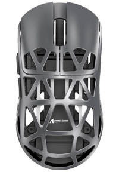

Sensitivity
DPI
5042,000

BATTERY
UnavailableCONNECTION
Connect your mouse or receiver, then start the local device helper.
LOCAL DEVICE HELPER
Runs locally on your computer.
Connect your mouse to load its stage configuration.
Sync a saved macro to inspect or manage its onboard copy.
Eight profiles stored on your mouse.
Current profile is unknown.
Save current settings on this PC. Loading creates a draft; Apply writes it to your mouse.